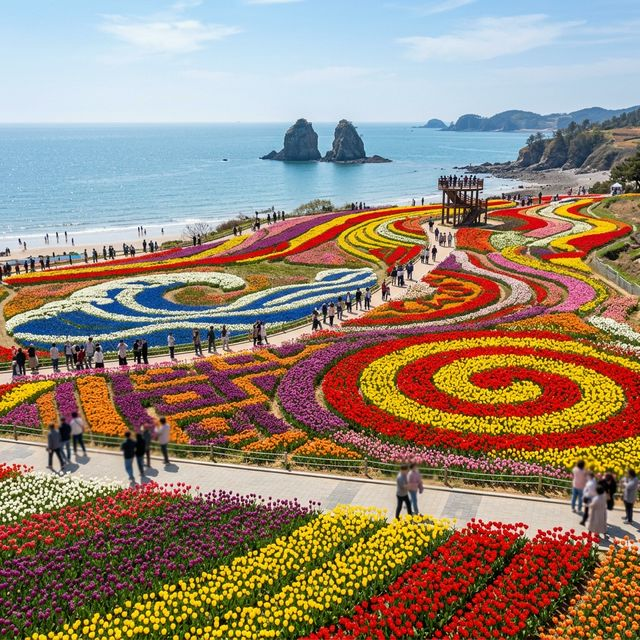
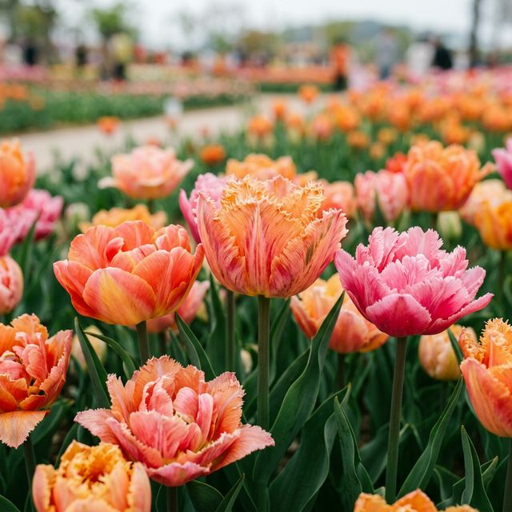

태안 세계튤립꽃박람회 2026 완벽 가이드 — 세계 5대 축제의 위엄, 실시간 개화 상황 내리포트
🌷 세계적 위상: 태안 세계튤립꽃박람회는 WTS(World Tulip Summit)로부터 세계 5대 튤립 축제 중 하나로 선정된 대한민국
대표 꽃박람회입니다.
🌅 해변의 조화: 서해안 최고의 낙조 명소인 꽃지해수욕장 바로 앞에서 펼쳐지며, 바다와 꽃을 한 자리에 만날 수 있는 독보적인 경관을 자랑합니다.
✅ 실시간 상황: 2026년 4월 12일 기준, 조기 개화 종부터 본격적으로 만개하기 시작했으며 4월 중순부터 5월 초까지가 최적의 관람기입니다.
봄의 절정에서 우리를 기다리는 것은 벚꽃뿐만이 아닙니다. 수백만 송이의 알록달록한 튤립이 드넓은 대지 위에서 파도를 이루는 곳, 바로 태안 세계튤립꽃박람회입니다. 안면도
꽃지해안공원에서 열리는 이번 박람회는 2026년 한층 더 업그레이드된 테마와 '미디어 파사드' 등 최첨단 기술이 접목되어 방문객들을 맞이하고 있는데요. 끝없이 펼쳐진 튤립 밭 사이를 걸으며 서해의
시원한 바닷바람을 맞을 수 있는 태안으로의 봄나들이, 지금 바로 떠나보실까요?

꽃지해수욕장의 할미·할아비 바위를 배경으로 펼쳐진 화려한 튤립 정원. (AI 제작 이미지)
1. 태안 세계튤립꽃박람회 2026 개요
올해로 제15회를 맞이하는 태안 세계튤립꽃박람회는 4월 10일부터 5월 10일까지 딱 한 달간 운영됩니다. 전 세계적으로 희귀한 품종을 포함해 수백 종의 튤립이 전시되며,
매년 바뀌는 메인 테마에 따라 꽃으로 정교한 거대 벽화를 그려내는 '플라워 뮤럴'은 이곳의 백미입니다. 2026년에는 '꽃과 빛의 협주곡'을 주제로 하여 낮에는 화려한
꽃의 향연을, 밤에는 낭만적인 야간 조명 쇼를 동시에 즐길 수 있습니다.
2. 100만 송이 튤립의 향연: 관람 포인트
단순히 꽃을 보는 것 이상으로, 태안 박람회장은 구역별로 명확한 테마를 가지고 있어 동선을 잘 짜야 합니다. 입구에 들어서자마자 마주하는 메인광장은 박람회의 전체적인
분위기를 보여주는 화려한 패턴 정원이 펼쳐지며, 풍차 가든 구역은 마치 네덜란드에 온 듯한 이국적인 느낌을 줍니다. 또한, 바다와 가장 가까운 낙조
분수길은 해 질 녘이면 붉은 노을과 튤립이 어우러져 세상 어디에도 없는 인생 사진을 선물합니다.

태안 박람회에서만 만날 수 있는 독특한 색감과 모양의 희귀 튤립들. (AI 제작 이미지)
3. 실전 여행 꿀팁: 주차와 예매
안면도 꽃지해수욕장 일대는 주말이면 극심한 정체가 발생합니다. 특히 박람회장 진입로인 안면대교부터 차가 막힐 수 있으니 주의가 필요합니다.
🚗 안면도 튤립 여행 서바이벌 가이드
1
오전 9시 이전 입장: 박람회장은 9시에 개장하지만, 주차장은 훨씬 전부터 붐빕니다. 일찍 도착해 꽃지해수욕장 산책 후 입장하는 코스를 추천합니다.
2
온라인 전용 예매: 현장 발권보다 온라인 예매가 더 빠르고 할인 혜택이 있을 수 있으니 미리 확인하세요.
3
유모차/휠체어 대여: 넓은 평지로 되어 있어 이동 장비를 빌려 활용하면 아이들과 어르신들도 편안하게 관람할 수 있습니다.
[IMAGE PROMPT]
"A classic Dutch-style windmill standing in the middle of a vast tulip field at the Taean Tulip Festival
grounds. The sky is a beautiful sunset orange and pink, reflecting onto the flower beds. Romantic and
fairytale-like atmosphere. ratio 1:1."
네덜란드풍 풍차와 튤립이 어우러진 이국적이고 낭만적인 박람회장의 일몰 풍경. (AI 제작 이미지 가이드)
4. 튤립과 함께 즐기는 안면도 명소
꽃 구경 후 안면도의 매력을 더 깊이 느낄 수 있는 주변 코스를 정리했습니다.
- 안면도 자연휴양림: 전국 최고의 수령을 자랑하는 안면송(소나무) 숲길을 걸으며 피톤치드 세례를 받을 수 있습니다.
- 꽃지해수욕장 할미·할아비 바위: 박람회장 바로 앞입니다. 물이 빠졌을 때 바위 앞까지 걸어 가보는 것은 안면도 여행의 필수입니다.
- 영목항 전망대: 안면도 최남단에 위치한 곳으로, 최근 핫플레이스로 떠오른 보령해저터널과 이어지는 광활한 바다 뷰를 감상할 수 있습니다.
| 항목 |
상세 정보 |
비고 |
| 입장료 |
성인 12,000원 / 청소년 10,000원 |
단체 할인 별도 |
| 관람 시간 |
09:00 ~ 20:00 (입장 마감 19:00) |
야간 상설 운영 |
| 주차 시설 |
박람회 전용 주차장 무료 이용 |
제2, 제3 주차장까지 운영 |
5. 식도락의 정점: 안면도 게국지와 간장게장
태안 여행에서 먹거리를 빼놓을 수 없죠. 안면도 하면 떠오르는 대표 음식은 단연 게국지입니다. 충청남도 향토 음식인 게국지는 꽃게와 배추 겉절이를 함께 끓여내어 시원하면서도
진한 국물 맛이 특징입니다. 또한, 서해 대하와 꽃게를 활용한 대하 튀김이나 간장게장 정식은 여행의 피로를 싹 가시게 해주는 최고의 봄날
만찬이 될 것입니다.
💡 준비물 Tip: 바닷가에 위치해 있어 낮에는 덥지만 해가 지면 바닷바람이 매우 찹니다. 방풍 점퍼나 얇은 가디건을 꼭 챙기세요.
6. 결론: 세계가 인정한 봄의 색채를 태안에서
수백만 송이의 튤립이 빚어내는 강렬한 색채의 향연, 태안 세계튤립꽃박람회 2026은 올봄 여러분에게 가장 화려한 기억을 선사할 것입니다. 벚꽃이 지고 난 뒤의 허전함을
채워줄 튤립의 생동감 넘치는 에너지를 온몸으로 느껴보세요. 2026년 4월, 서해의 푸른 바다와 무지갯빛 꽃밭이 기다리는 태안 안면도로 지금 바로 핸들을 돌려보시는 것은
어떨까요? 최고의 봄날이 그곳에서 시작됩니다.
본 기사는 2026년 4월 12일 실시간 기상 관측 및 과거 개화 데이터를 바탕으로 작성되었습니다. 튤립의 절정 시기는 개별 품종에 따라 차이가 있을 수 있으며, 주말에는 인파가 매우 몰리니 대중교통
이용 및 조기 방문을 적극 권장합니다.
#태안튤립축제2026
#태안세계튤립꽃박람회
#안면도가볼만한곳
#꽃지해수욕장낙조
#전국4월축제추천
#주말나들이명소
#태안게국지맛집
#안면도자연휴양림
#인생사진명소
#꽃구경가이드